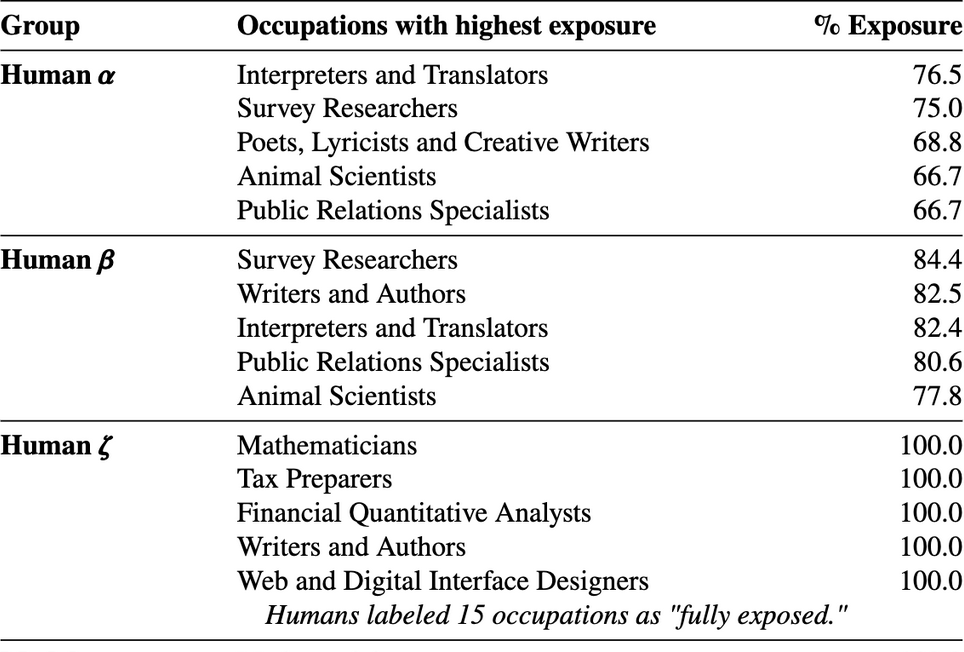

Tl;dr
- LLMs and other GenAI models can reproduce significant chunks of training data;
- Specific prompts seem to “unlock” training data;
- We have many current and future copyright challenges: training may not infringe copyright, but legal doesn’t mean legitimate – we consider the analogy of MegaFace, where surveillance models have been trained on photos of minors, for example, without informed consent;
- Copyright was intended to incentivize cultural production: in the era of generative AI, copyright won’t be enough.
In Borges’ fable Pierre Menard, Author of The Quixote, the eponymous Monsieur Menard plans to sit down and write a portion of Cervantes’ Don Quixote. Not to transcribe, but re-write the epic novel word for word:
His goal was never the mechanical transcription of the original; he had no intention of copying it. His admirable ambition was to produce a number of pages which coincided—word for word and line by line—with those of Miguel de Cervantes.
He first tried to do so by becoming Cervantes, learning Spanish, and forgetting all the history since Cervantes wrote Don Quixote, among other things, but then decided it would make more sense to (re)write the text as Menard himself. The narrator tells us that “the Cervantes text and the Menard text are verbally identical, but the second is almost infinitely richer.” Perhaps this is an inversion of the ability of Generative AI models (LLMs, text-to-image, and more) to reproduce swathes of their training data without those chunks being explicitly stored in the model and its weights: the output is verbally identical to the original but reproduced probabilistically without any of the human blood, sweat, tears, and life experience that goes into the creation of human writing and cultural production.
Generative AI Has a Plagiarism Problem
ChatGPT, for example, doesn’t _memorize _its training data, per se. As Mike Loukides and Tim O’Reilly astutely point out,
A model prompted to write like Shakespeare may start with the word “To,” which makes it slightly more probable that it will follow that with “be,” which makes it slightly more probable that the next word will be “or” – and so forth.
So then, as it turns out, next-word prediction (and all the sauce on top) can reproduce chunks of training data. This is the basis of the NYTimes lawsuit against OpenAI. I have been able to convince ChatGPT to give me large chunks of novels that are in the public domain, such as those on Project Gutenberg, including Pride and Prejudice. Researchers are finding more and more ways to extract training data from ChatGPT and other models. As far as other types of foundation models go, recent work by Gary Marcus and Reid Southern has shown that you can use Midjourney (text-to-image) to generate images such as these:
This seems to be emerging as a feature, not a bug, and hopefully it’s obvious to you why they called their IEEE opinion piece Generative AI Has a Visual Plagiarism Problem.
Compression, Transformation, Hallucination, and Generation
Training data isn’t stored in the model per se but large chunks of it are reconstructable, given the correct key (“prompt”).
There are lots of conversations about whether or not LLMs (and machine learning, more generally) are forms of compression or not. In many ways, they are, but they also have generative capabilities that we don’t often associate with compression.
Ted Chiang wrote a thoughtful piece for the New Yorker called ChatGPT is a Blurry JPEG of the Web that opens with the analogy of a photocopier making a slight error due to the way it compresses the digital image. It’s an interesting piece that I commend to you but one that makes me uncomfortable. To me, the analogy breaks down before it begins: for the photocopier, the error is a bug, whereas, for LLMs, all errors are features. Let me explain. Or, rather, let Andrej Karpathy explain:
I always struggle a bit [when] I'm asked about the "hallucination problem" in LLMs. Because, in some sense, hallucination is all LLMs do. They are dream machines.
We direct their dreams with prompts. The prompts start the dream, and based on the LLM's hazy recollection of its training documents, most of the time the result goes someplace useful.
It's only when the dreams go into deemed factually incorrect territory that we label it a "hallucination". It looks like a bug, but it's just the LLM doing what it always does.
At the other end of the extreme consider a search engine. It takes the prompt and just returns one of the most similar "training documents" it has in its database, verbatim. You could say that this search engine has a "creativity problem" - it will never respond with something new. An LLM is 100% dreaming and has the hallucination problem. A search engine is 0% dreaming and has the creativity problem.As a side note, building products that strike balances between Search and LLMs will be a highly productive area and companies such as Perplexity AI are also doing interesting work there.
It’s interesting to me that, while LLMs are constantly hallucinating, they can also reproduce large chunks of training data, not just go “someplace useful”, as Karpathy put it (summarization, for example). So: is the training data “stored” in the model? Well, no, not quite. But also…. Yes?
Let’s say I tear up a painting into a thousand pieces and put them back together in a mosaic: is the original painting stored in the mosaic? No, unless you know how to rearrange the pieces to get the original. You need a key. And, as it turns out, there happen to be certain prompts that act as keys that _unlock _training data.
This also has implications for whether Generative AI can create anything particularly novel: I have high hopes that it can but I think that is still yet to be demonstrated. There are also significant and serious concerns about what happens when we continually train models on the outputs of other models.
Implications for Copyright and Legitimacy, Big Tech and Informed Consent
Copyright isn’t the correct paradigm to be thinking about here; legal doesn’t mean legitimate; surveillance models trained on photos of your children.
Now I don’t think this necessarily has implications for whether LLMs are infringing copyright and whether ChatGPT is infringing that of the NYTimes, Sarah Silverman, George RR Martin, or any of us whose writing has been scraped for training data. But I also don’t think copyright is necessarily the best paradigm for thinking through whether such training and deployment should be legal or not. Firstly, copyright was created in response to the affordances of mechanical reproduction and we now live in an age of digital reproduction, distribution, and generation. It’s also about what type of society we want to live in collectively: copyright itself was originally created to incentivize certain modes of cultural production.
Early predecessors of modern copyright law, such as the Statute of Anne (1710) in England, were created to incentivize writers to write and to incentivize more cultural production. Up until this point, the Crown had granted exclusive rights to print certain works to the Stationers’ Company, effectively creating a monopoly, and there weren’t financial incentives to write. So, even if OpenAI and their frenemies aren’t breaching copyright law, what type of cultural production are we and aren’t we incentivizing by not zooming out and looking at as many of the externalities here as possible?
Remember the context. Actors and writers were recently striking while Netflix had an AI product manager job listing with a base salary ranging from $300K to $900K USD. Also, note that we already live in a society where many creatives end up in advertising and marketing. These may be some of the first jobs on the chopping block due to ChatGPT and friends, particularly if macroeconomic pressure keeps leaning on us all. And that’s according to OpenAI!

Back to copyright: I don’t know enough about copyright law but it seems to me as though LLMs are “transformative” enough to have a fair use defense in the US. Also, training models doesn’t seem to me to infringe copyright because it doesn’t yet produce output! But perhaps it should infringe something: even when the collection of data is legal (which statistically it won’t entirely be for any web-scale corpus), it doesn’t mean it’s legitimate, and it definitely doesn’t mean there was informed consent.
To see this, let’s consider another example, that of MegaFace. In How Photos of Your Kids Are
Powering Surveillance Technology, the NYTimes reported that
One day in 2005, a mother in Evanston, Ill., joined Flickr. She uploaded some pictures of her children, Chloe and Jasper. Then she more or less forgot her account existed…
Years later, their faces are in a database that’s used to test and train some of the most sophisticated [facial recognition] artificial intelligence systems in the world.
What’s more,
Containing the likenesses of nearly 700,000 individuals, it has been downloaded by dozens of companies to train a new generation of face-identification algorithms, used to track protesters, surveil terrorists, spot problem gamblers, and spy on the public at large.
Even in the cases where this is legal (which seem to be the vast majority of cases), it’d be tough to make an argument that it’s legitimate and even tougher to claim that there was informed consent. I also presume most people would consider it ethically dubious. I raise this example for several reasons:
- Just because something is legal, doesn’t mean we want it to be going forward;
- This is illustrative of an entirely new paradigm, enabled by technology, in which vast amounts of data can be collected, processed, and used to power algorithms, models, and products, the same paradigm under which GenAI models are operating;
- It’s a paradigm that’s baked into how a lot of Big Tech operates and we seem to accept in many forms now: but if you’d built LLMs 10, let alone 20, years ago by scraping web-scale data, this would likely be a very different conversation.
I should probably also define what I mean by “legitimate/illegitimate” or at least point to a definition. When the Dutch East India Company “purchased” Manhattan from the Lenape people, Peter Minuit, who orchestrated the “purchase”, supposedly paid $24 worth of trinkets. That wasn’t illegal. Was it legitimate? It depends on your POV: not from mine. The Lenape didn’t have a conception of land ownership, just as we don’t yet have a serious conception of data ownership. This supposed “purchase” of Manhattan has resonances with uninformed consent. It’s also relevant as Big Tech is known for its extractive and colonialist practices.
This isn’t about copyright, the NYTimes, or OpenAI
It’s about what type of society you want to live in
I think it’s entirely possible that the NYTimes and OpenAI will settle out of court: OpenAI has strong incentives to do so and the Times likely also has short-term incentives to. However, the Times has also proven itself adept at playing the long game. Don’t fall into the trap of thinking this is merely about the specific case at hand. To zoom out again, we live in a society where mainstream journalism has been carved out and gutted by the Internet, Search, and Social Media. The NYTimes is one of the last serious publications standing and they’ve worked incredibly hard and cleverly in their “digital transformation” since the advent of the internet.1
Platforms such as Google have inserted themselves as middlemen between producers and consumers in a manner that has killed the business models of many of the content producers. They’re also disingenuous about what they’re doing: when the Australian Government was thinking of making Google pay news outlets that it linked to in Search, Google’s response was:
Now remember, we don’t show full news articles, we just show you where you can go and help you to get there. Paying for links breaks the way search engines work, and it undermines how the web works, too. Let me try and say it another way. Imagine your friend asks for a coffee shop recommendation. So you tell them about a few nearby so they can choose one and go get a coffee. But then you get a bill to pay all the coffee shops, simply because you mentioned a few. When you put a price on linking to certain information, you break the way search engines work, and you no longer have a free and open web. We’re not against a new law, but we need it to be a fair one. Google has an alternative solution that supports journalism. It’s called Google News Showcase.
Copyright aside, the ability of Generative AI to displace creatives is a real threat and I’m asking a real question: do we want to live in a society where there aren’t many incentives for humans to write, paint, and make music? Borges may not write today, given current incentives. If you don’t particularly care about Borges, perhaps you care about Philip K. Dick, Christopher Nolan, Salman Rushdie, or the Magic Realists, who were all influenced by his work.
Beyond all the human aspects of cultural production, don’t we also still want to dream? Or do we also want to outsource that and have LLMs do all the dreaming for us?
Notes
Footnotes
Also note that the outcome of this case could have significant impact for the future of OSS and open weight foundation models, something I hope to write about in future.↩︎